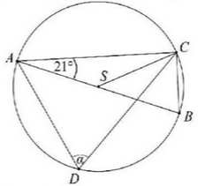
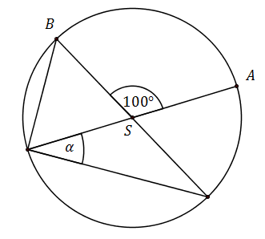
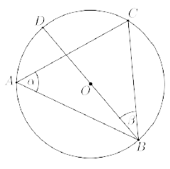

Jesteś tutaj: Matura
podstawowa - kurs - część 43 - zadania
Matura podstawowa - kurs - część 43 - zadania
Cały kurs na: ./matematyka-matura-podstawowa-kurs.html.
Kąt środkowy i kąt wpisany są oparte na tym samym łuku. Suma ich miar jest równa \(
180^\circ \). Jaka jest miara kąta środkowego?
A.\(60^\circ \)
B.\(90^\circ \)
C.\(120^\circ \)
D.\(135^\circ \)
C
Punkty \(A, B, C, D\) dzielą okrąg na \(4\) równe łuki. Miara zaznaczonego na
rysunku kąta wpisanego \(ACD\) jest równa 
A.\( 90^\circ \)
B.\( 60^\circ \)
C.\( 45^\circ \)
D.\( 30^\circ \)
C
Punkty \(A\) i \(B\) leżą na okręgu o środku \(O\) i dzielą ten okrąg na dwa łuki,
których stosunek długości jest równy \(7:5\). Oblicz miarę kąta środkowego opartego na krótszym
łuku. 
\(150^\circ \)
Punkt \(O\) jest środkiem okręgu o średnicy \(AB\) (tak
jak na rysunku). Kąt \(\alpha \) ma miarę 
A.\( 40^\circ \)
B.\( 50^\circ \)
C.\( 60^\circ \)
D.\( 80^\circ \)
B
Punkt \(O\) jest środkiem okręgu. Kąt \(\alpha\), zaznaczony na rysunku, ma miarę

A.\( 50^\circ \)
B.\( 45^\circ \)
C.\( 25^\circ \)
D.\( 20^\circ \)
C
Kąt środkowy oparty na łuku, którego długość jest równa \( \frac{4}{9} \) długości
okręgu, ma miarę
A.\(160^\circ \)
B.\(80^\circ \)
C.\(40^\circ \)
D.\(20^\circ \)
A
Punkty \( A \), \( B \) i \( C \) leżą na okręgu o środku \( O \) (zobacz rysunek).
Zaznaczony na rysunku wypukły kąt środkowy \( AOB \) ma miarę 
A.\(60^\circ \)
B.\(100^\circ \)
C.\(120^\circ \)
D.\(140^\circ \)
C
Na okręgu o środku \( S \) leżą punkty \( A, B, C \text{ i } D \). Odcinek \( AB \)
jest średnicą tego okręgu. Kąt między tą średnicą a cięciwą \( AC \) jest równy \( 21^\circ \)
(zobacz rysunek).  Kąt \( \alpha \)
między cięciwami \( AD \) i \( CD \) jest równy
A.\( 21^\circ \)
B.\( 42^\circ \)
C.\( 48^\circ \)
D.\( 69^\circ \)
D
Kąt \(ASB\) jest kątem środkowym w okręgu i jego miara wynosi \(100^\circ \). Miara
zaznaczonego kąta \(\alpha \) jest równa 
A.\( 40^\circ \)
B.\( 45^\circ \)
C.\( 50^\circ \)
D.\( 60^\circ \)
A
Miara kąta wpisanego w okrąg jest o \(20^\circ \) mniejsza od miary kąta środkowego
opartego na tym samym łuku. Wynika stąd, że miara kąta wpisanego jest równa
A.\( 30^\circ \)
B.\( 20^\circ \)
C.\( 10^\circ \)
D.\( 5^\circ \)
B
W okręgu o środku \(O\) dany jest kąt o mierze \(50^\circ \), zaznaczony na
rysunku.  Miara kąta oznaczonego na
rysunku literą \(\alpha \) jest równa
Miara kąta oznaczonego na
rysunku literą \(\alpha \) jest równa
Miara kąta oznaczonego na
rysunku literą \(\alpha \) jest równa A.\( 40^\circ \)
B.\( 50^\circ \)
C.\( 20^\circ \)
D.\( 25^\circ \)
A
Punkty \(A\), \(B\), \(C\), \(D\) są położone w tej kolejności na okręgu o środku
\(O\) (zobacz rysunek). Odcinek \(DB\) jest średnicą tego okręgu i \(|\sphericalangle BAC|=\alpha
\), \(|\sphericalangle CBD|=\beta \). Wykaż, że \(\alpha +\beta =90^\circ \). 